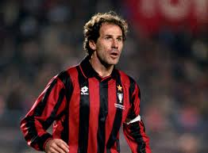
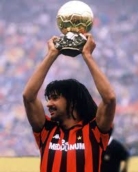
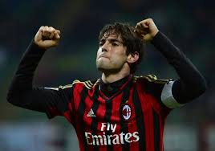
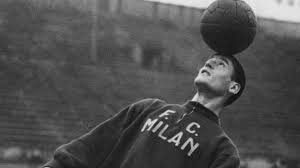
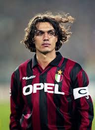
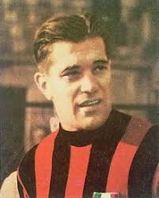
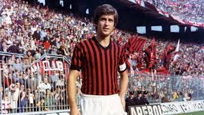
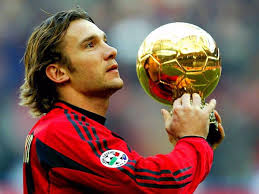
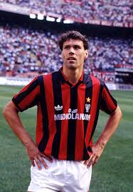
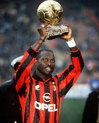

Símbolo y emblema del Milan durante dos décadas, es el segundo futbolista que más veces ha vestido la camiseta rossonera. Inamovible para Arrigo Sacchi y Fabio Capello en el centro de la zaga milanista y uno de los grandes artífices de las seis Serie A y las tres Champions League que se ganaron mientras Baresi capitaneaba a los de San Siro.
El tulipán negro era uno de los referentes del Milan de finales de los 80 y principios de los 90. Futbolista completo con potencia, llegada, gol, calidad y unas rastas y un bigote emblemáticos. En sus seis años en el club levantó tres ligas y dos Champions League.
En el Milan de Carlo Ancelotti él era la guinda del pastel que formaban los Pirlo, Seedorf o Shevchenko. Desde la mediapunta , su clase y elegancia dirigían los ataques del último gran Milan que se recuerda, ese que ganó la Champions League en 2007 con un Kaká en modo estelar.
Uno de los componentes del trío de suecos que maravillaron en la selección y en el Milan: Gre-No-Li (Gren, Nordahl y Liedholm). En sus 12 años en el Milan destacó por la clase que desprendía tanto dentro como fuera del césped y por lo que se ganó el apodo de Il Barone.
Il Capitano es toda una leyenda en el Milan. Una sola camiseta, 25 temporadas y 902 partidos a sus espaldas. Siete Serie A y cinco Champions League en su palmarés. Poco más que añadir.
Otro componente del trío Gre-No-Li. Si Liedholm era la clase rossonera, Nordahl era el hombre gol del Milan de los años 50. Aún a día de hoy se mantiene como el máximo goleador de la historia del club, con 221 goles en ocho temporadas y cinco Capocannonieri bajo el brazo.
Considerado uno de los mejores futbolistas italianos de la historia, fue el primer transalpino en ganar un Balón de Oro. Vistió la camiseta del Milan durante 19 temporadas y formó parte del equipo que levantó la primera Copa de Europa para el club en 1963.
Otra de la joyas de la corona del Milan de Carlo Ancelotti. El delantero ucraniano es el segundo máximo goleador de la historia rossonera con 175 dianas en ocho cursos. Tras marchar al Chelsea de Abramovich en 2006, volvería dos años después, pero su nivel ya no fue el mismo que antaño.
Junto a Rijkaard y Gullit, el ‘cisne de Utrecht’ formaba parte el trío de holandeses del conjunto rossonero que llevó al club a conquistar la Champions League en 1989 y 1990. Era el goleador del Milan de Sacchi y Capello, y solo las lesiones pudieron frenar a uno de los mejores delanteros de la historia.
Llegó al Milan para ocupar el hueco que dejó van Basten en la punta de ataque y meses después se convirtió en el primer futbolista no europeo en ganar el Balón de Oro. En sus cinco años en San Siro levantó dos Serie A.
